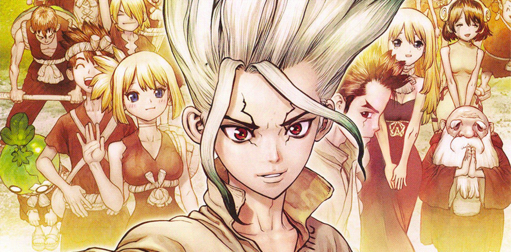
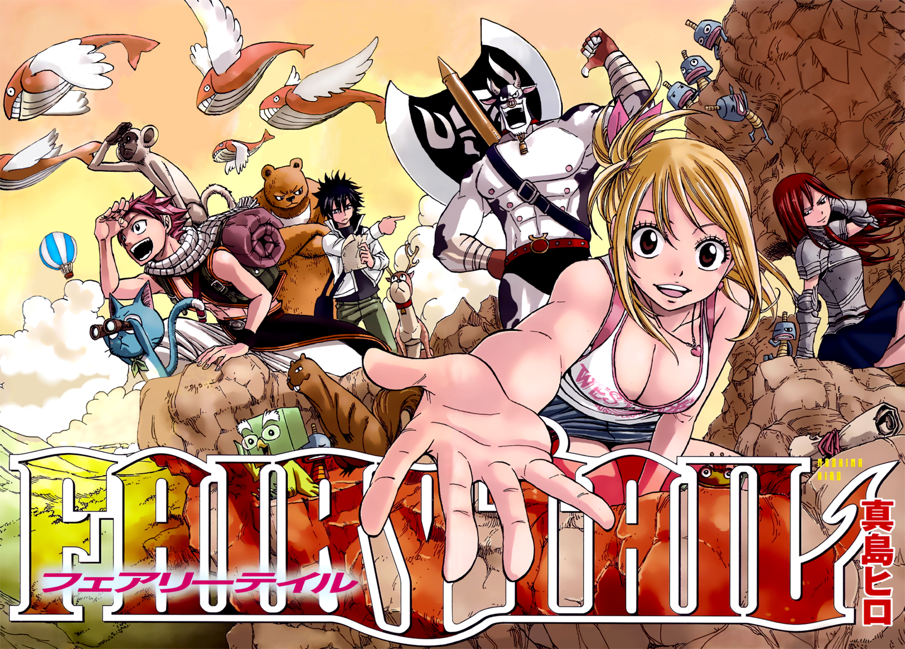

5: Arifureta Shokugyou de Sekai Saikyou

Ratings : 🌟 6.6
English Name : Arifureta: From Commonplace to World's Strongest
Genre :ActionAdventureFantasyHarem
Seasons : 1
Episodes : 13
Air-Date : 8-July-2019
Watch-Time : 24 min.(Per Ep.)
Synopsis:
The ordinary life of 17-year-old otaku Hajime Nagumo is disrupted when he and his classmates are summoned to a fantasy world and tasked with saving mankind. While his classmates are gifted with impressive abilities useful in combat, Hajime
is belittled for only gaining an inferior transmutation skill that lacks any real offensive power.
During an expedition in the Great Orcus Labyrinth, Hajime is betrayed by one of his classmates, plummeting him to the bottom of an abyss. Though he survives the fall, Hajime is faced with menacing monsters and misfortunes that send him
spiraling into a grim nightmare. Desperate to live and return home one day, he resolves to fight for his survival—only to meet an imprisoned vampire he names Yue, who is also seeking to escape the labyrinth. Taking an interest in him, Yue
and a few others along the way accompany Hajime on his journey to find a way back home, while steadily transforming from commonplace to the world's strongest.
4: Dokutaa Sutoon
Ratings : 🌟 8.3
English Name : Dr. Stone
Genre : Sci-FiAdventureShounen
Seasons : 1
Episodes : 24
Air-Date : 5-July-2019
Watch-Time : 24 min.(Per Ep.)
Synopsis:
After five years of harboring unspoken feelings, high-schooler Taiju Ooki is finally ready to confess his love to Yuzuriha Ogawa. Just when Taiju begins his confession however, a blinding green light strikes the Earth and petrifies mankind
around the world—turning every single human into stone.
Several millennia later, Taiju awakens to find the modern world completely nonexistent, as nature has flourished in the years humanity stood still. Among a stone world of statues, Taiju encounters one other living human: his science-loving
friend Senkuu, who has been active for a few months. Taiju learns that Senkuu has developed a grand scheme—to launch the complete revival of civilization with science. Taiju's brawn and Senkuu's brains combine to forge a formidable
partnership, and they soon uncover a method to revive those petrified.
However, Senkuu's master plan is threatened when his ideologies are challenged by those who awaken. All the while, the reason for mankind's petrification remains unknown.
3.1: Fairy Tail: Feari teiru
Ratings : 🌟 8.3
English Name : Fairy Tail
Genre : ActionAdventureComedyMagicFantasyShounen
Seasons : 8
Episodes : 339
Air-Date : 12-October-2009
Watch-Time : 24 min.(Per Ep.)
Synopsis:
In the mystical land of Fiore, magic exists as an essential part of everyday life. Countless magic guilds lie at the core of all magical activity, and serve as venues for like-minded mages to band together and take on job requests. Among
them, Fairy Tail stands out from the rest as a place of strength, spirit, and family.
Lucy Heartfilia is a young mage searching for celestial gate keys, and her dream is to become a full-fledged wizard by joining this famous guild. In her search, she runs into Natsu Dragneel and his partner Happy, who are on a quest to find
Natsu's foster father, the dragon Igneel.
Upon being tricked by a man, Lucy falls under an abduction attempt, only to be saved by Natsu. To her shock, he reveals that he is a member of Fairy Tail and invites her to join them. There, Lucy meets the guild's strange members, such as
the ice wizard Gray Fullbuster and magic swordswoman Erza Scarlet. Together as a family, they battle the forces of evil, help those in need, and gain new friends, all the while enjoying the never-ending adventure that is Fairy Tail.
3.2: Vinland Saga

Ratings : 🌟 8.7
English Name : Vinland Saga
Genre : ActionAdventureDramaHistoricalSeinen
Seasons : 1
Episodes : 24
Air-Date : 8-July-2019
Watch-Time : 24 min.(Per Ep.)
Synopsis:
Young Thorfinn grew up listening to the stories of old sailors that had traveled the ocean and reached the place of legend, Vinland. It's said to be warm and fertile, a place where there would be no need for fighting—not at all like the
frozen village in Iceland where he was born, and certainly not like his current life as a mercenary. War is his home now. Though his father once told him, "You have no enemies, nobody does. There is nobody who it's okay to hurt," as he
grew, Thorfinn knew that nothing was further from the truth.
The war between England and the Danes grows worse with each passing year. Death has become commonplace, and the viking mercenaries are loving every moment of it. Allying with either side will cause a massive swing in the balance of power,
and the vikings are happy to make names for themselves and take any spoils they earn along the way. Among the chaos, Thorfinn must take his revenge and kill Askeladd, the man who murdered his father. The only paradise for the vikings, it
seems, is the era of war and death that rages on.
2: Hunter x Hunter

Ratings : 🌟 9.1
English Name : Hunter x Hunter
Genre : ActionAdventureFantasySuper PowerShounen
Seasons : 1
Episodes : 148
Air-Date : 2-October-2011
Watch-Time : 24 min.(Per Ep.)
Synopsis:
Hunter x Hunter is set in a world where Hunters exist to perform all manner of dangerous tasks like capturing criminals and bravely searching for lost treasures in uncharted territories. Twelve-year-old Gon Freecss is determined to become
the best Hunter possible in hopes of finding his father, who was a Hunter himself and had long ago abandoned his young son. However, Gon soon realizes the path to achieving his goals is far more challenging than he could have ever imagined.
Along the way to becoming an official Hunter, Gon befriends the lively doctor-in-training Leorio, vengeful Kurapika, and rebellious ex-assassin Killua. To attain their own goals and desires, together the four of them take the Hunter Exam,
notorious for its low success rate and high probability of death. Throughout their journey, Gon and his friends embark on an adventure that puts them through many hardships and struggles. They will meet a plethora of monsters, creatures,
and characters—all while learning what being a Hunter truly means.
1: One Piece: Wan pisu

Ratings : 🌟 8.3
English Name : One Piece
Genre : ActionAdventureComedySuper PowerFantasyShounen
Seasons : 1
Episodes : 957(Ongoing)
Air-Date : 20-October-1999
Watch-Time : 24 min.(Per Ep.)
Synopsis:
Gol D. Roger was known as the "Pirate King," the strongest and most infamous being to have sailed the Grand Line. The capture and execution of Roger by the World Government brought a change throughout the world. His last words before his
death revealed the existence of the greatest treasure in the world, One Piece. It was this revelation that brought about the Grand Age of Pirates, men who dreamed of finding One Piece—which promises an unlimited amount of riches and
fame—and quite possibly the pinnacle of glory and the title of the Pirate King.
Enter Monkey D. Luffy, a 17-year-old boy who defies your standard definition of a pirate. Rather than the popular persona of a wicked, hardened, toothless pirate ransacking villages for fun, Luffy’s reason for being a pirate is one of pure
wonder: the thought of an exciting adventure that leads him to intriguing people and ultimately, the promised treasure. Following in the footsteps of his childhood hero, Luffy and his crew travel across the Grand Line, experiencing crazy
adventures, unveiling dark mysteries and battling strong enemies, all in order to reach the most coveted of all fortunes—One Piece.